The Dark Melody
«"Muerto Al Fin es el intento de romper las cadenas del miedo". Entrevista exclusiva sobre la sombra, Black Sabbath y la escena pesada.»
Leer ArtículoEntrevistas, Reseñas & Cobertura en Medios
«"Muerto Al Fin es el intento de romper las cadenas del miedo". Entrevista exclusiva sobre la sombra, Black Sabbath y la escena pesada.»
Leer Artículo
«"La música es una forma de meditación". Entrevista en profundidad sobre "Muerto Al Fin", la espiritualidad, el Bardo Thodol y el nacimiento de GOTRA.»
Leer Entrevista
«Entrevista en vivo en "Que Sea Rock" (FM VOX 102.9 - Prog. 263) junto a Julián Barabino, conversando sobre el single "Muerto Al Fin", la búsqueda estética y la identidad pesada de GOTRA.»
Ver Entrevista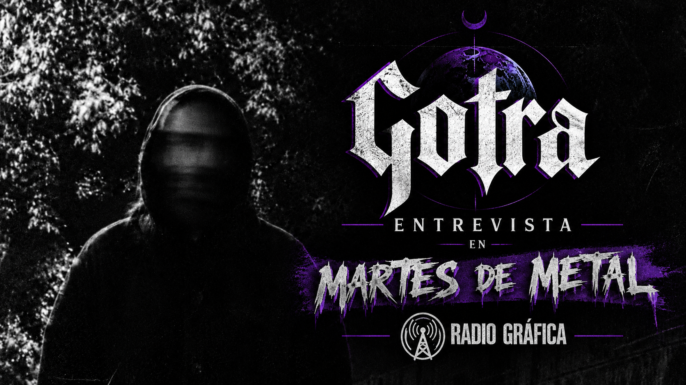
«Entrevista en profundidad en Martes de Metal (Radio Gráfica) conversando sobre el lanzamiento del single "Muerto Al Fin", la búsqueda estética y la raíz pesada de GOTRA.»
Ver Entrevista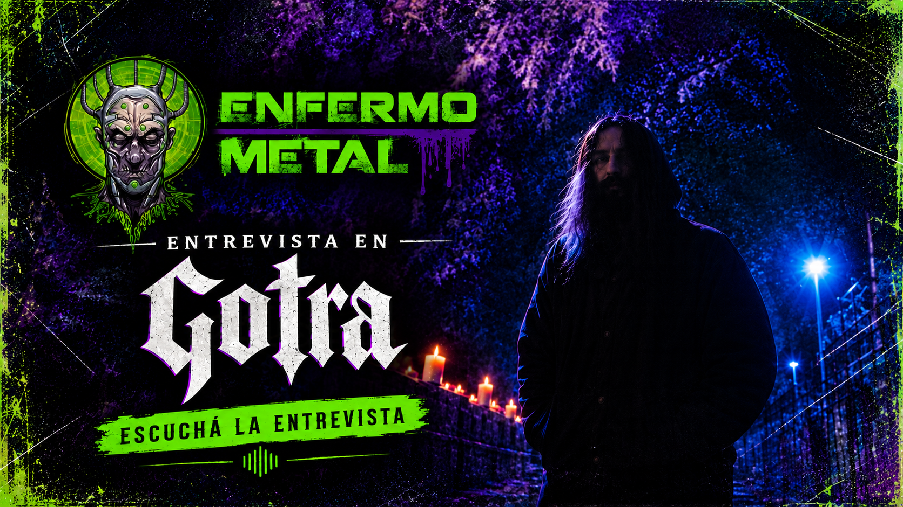
«Entrevista en vivo en Enfermo Metal Radio conversando sobre la identidad sonora de GOTRA, el proceso compositivo de "Muerto Al Fin" y el metal psicodélico.»
Ver Entrevista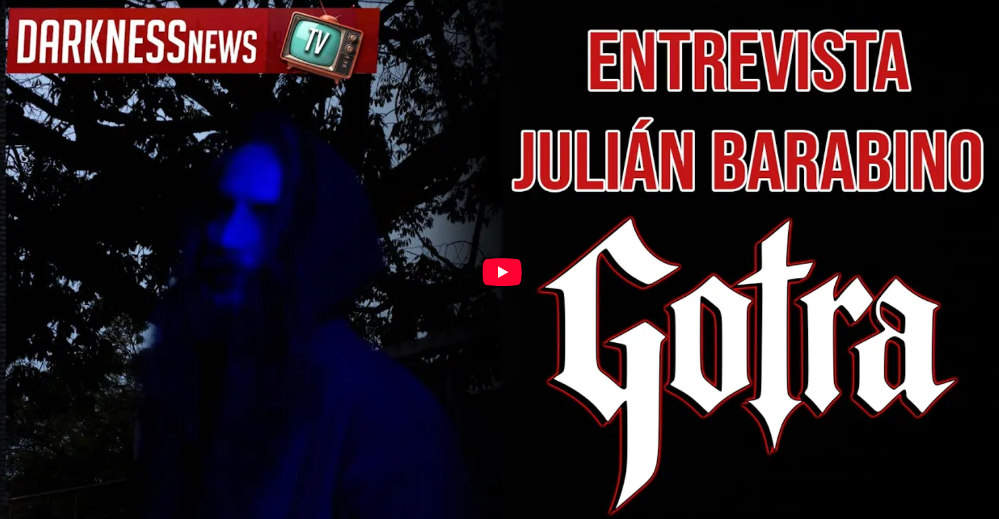
«Entrevista en profundidad en Darkness News TV sobre el nacimiento de GOTRA, el single "Muerto Al Fin", la espiritualidad, el Bardo Thodol y la visión artística del proyecto.»
Ver Entrevista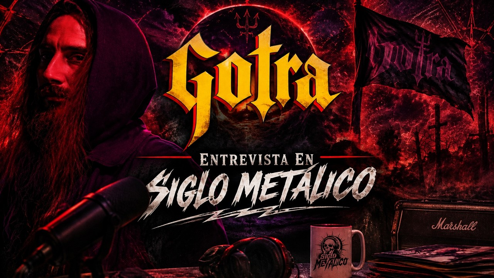
«Entrevista en profundidad en Siglo Metálico sobre el nacimiento de GOTRA, las ideas que dieron forma a su identidad, influencias y todo el proceso detrás de "Muerto Al Fin".»
Ver Entrevista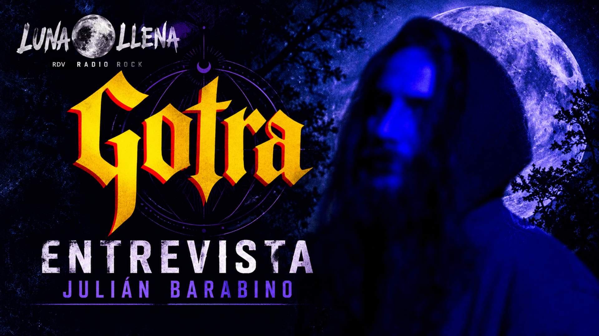
«Entrevista en profundidad en Luna Llena (RDV Radio Rock) sobre el nacimiento de GOTRA, las influencias de los 70, la raíz budista del proyecto y la composición como refugio sonoro.»
Ver Entrevista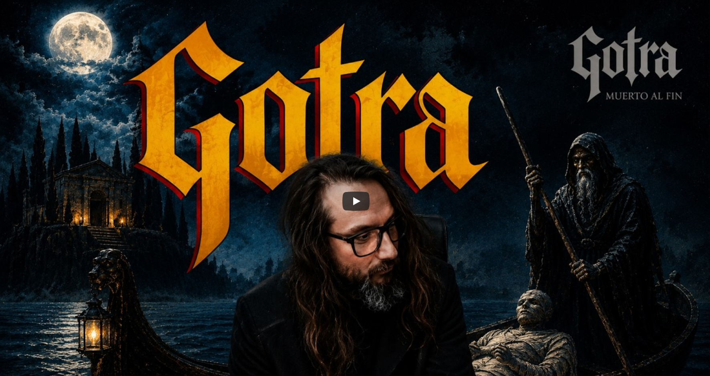
«Entrevista en profundidad en Music Extreme junto a Julián Barabino, explorando la génesis de GOTRA, el sonido doom psicodélico y el concepto detrás de "Muerto Al Fin".»
Ver Entrevista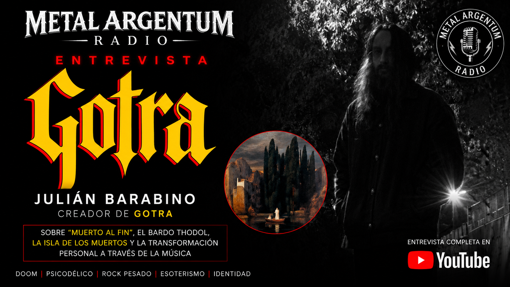
«Entrevista en profundidad en Metalargentum Radio sobre el nacimiento de GOTRA, el single "Muerto Al Fin", la inspiración en el Bardo Thodol y La Isla de los Muertos, y la búsqueda de un sonido valvular y analógico.»
Ver Entrevista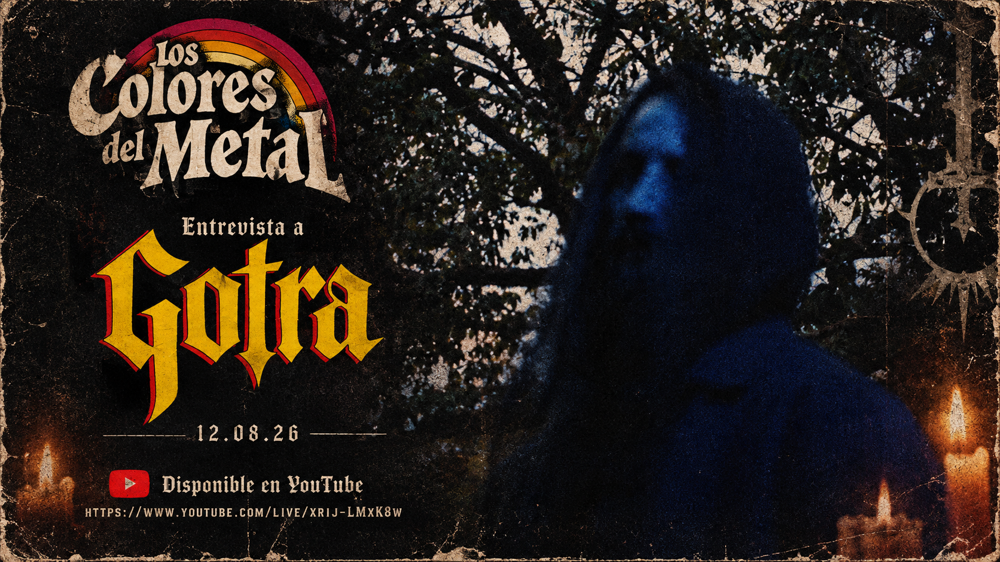
«Entrevista telefónica en vivo en "Los Colores del Metal" (Sonidos FM, Berazategui), conversando sobre el nacimiento de GOTRA, el concepto y el lanzamiento de "Muerto Al Fin".»
Ver Entrevista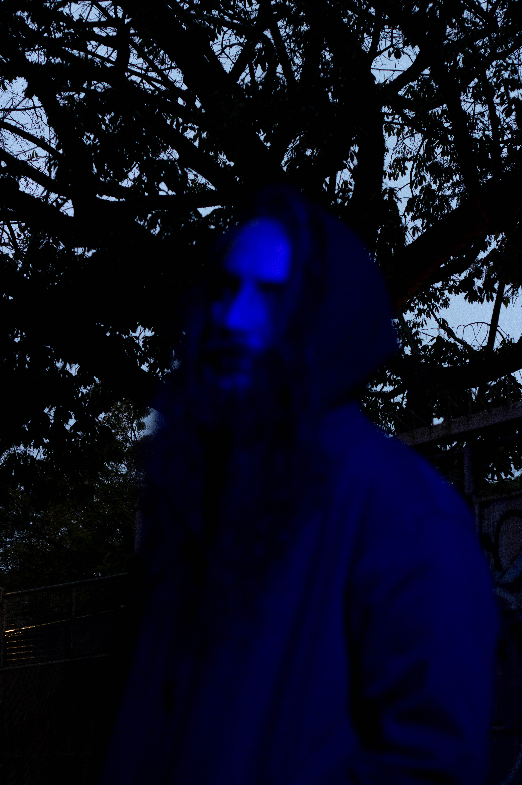
«"Gotra: la música como territorio de búsqueda". Entrevista en profundidad sobre el proceso creativo de "Muerto Al Fin", la transformación y el esoterismo.»
Leer Artículo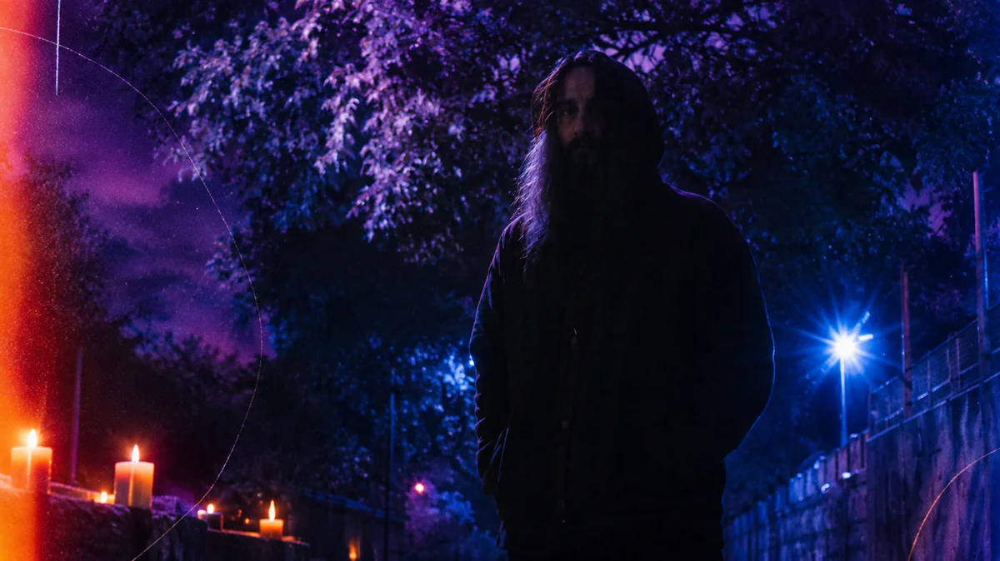
«"Hacer consciente la oscuridad desde la música y la distorsión". Entrevista en profundidad sobre la raíz espiritual de GOTRA, Jung, el Bardo Thodol y "Muerto Al Fin".»
Leer Entrevista
«GOTRA debuta con "Muerto Al Fin", su primer single junto a Javier Rubio de Malón.»
Leer Artículo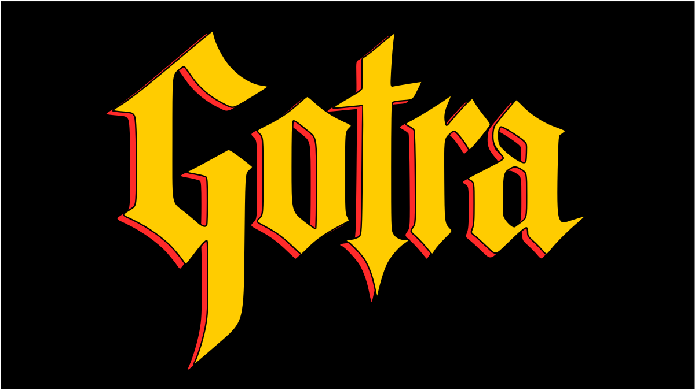
«JULES inicia una nueva etapa con GOTRA y presenta el intenso debut de "Muerto Al Fin".»
Leer Artículo«Gotra presenta el single debut «Muerto al Fin» en colaboración con Javier Rubio (Malón).»
Leer Artículo
«GOTRA debuta con "Muerto Al Fin", la nueva apuesta pesada de Julián Barabino.»
Leer Artículo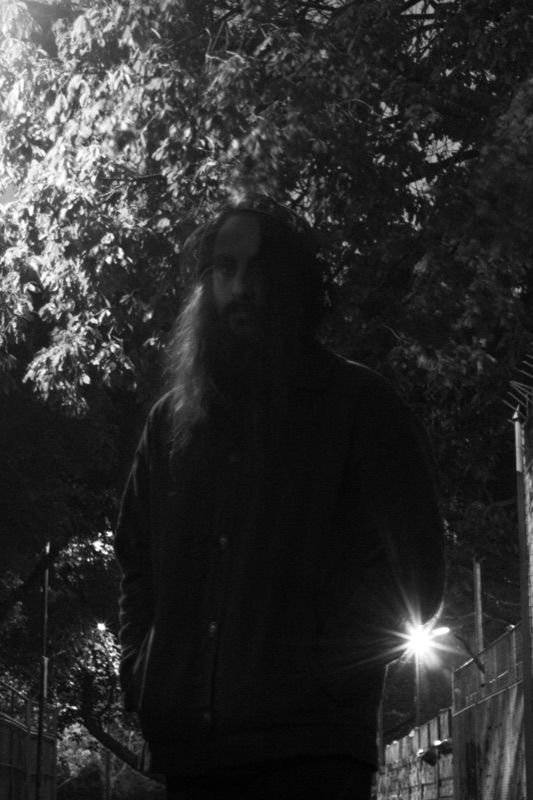
«Gotra: Metal Psicodélico con "Muerto al Fin" ft. Javier Rubio. El nuevo proyecto de Julián Barabino fusiona doom, esoterismo y rock de los 70.»
Leer Artículo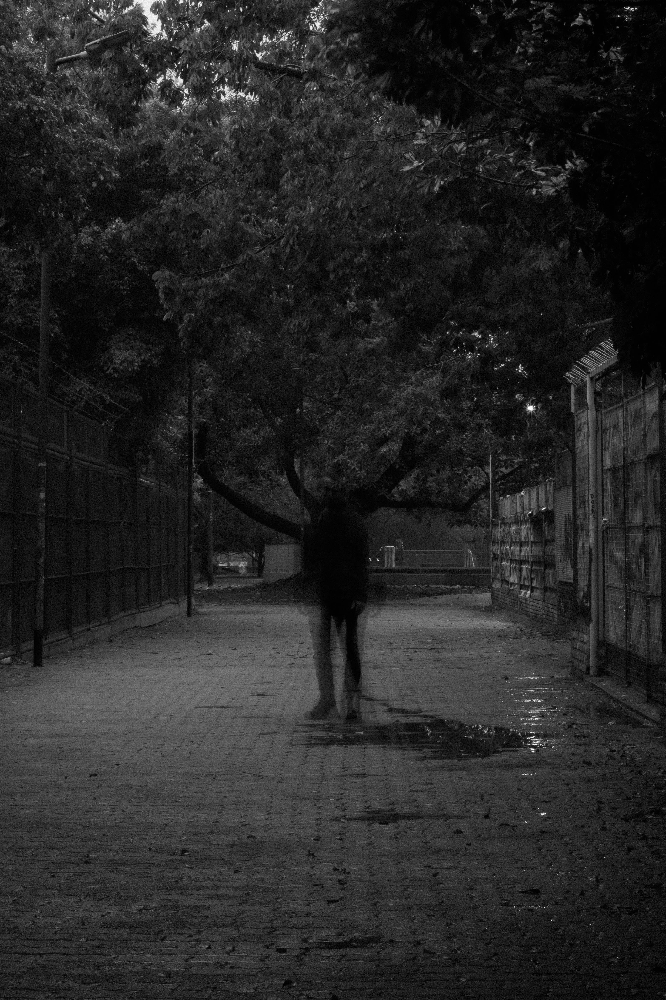
«Gotra: doom, psicodelia y esoterismo para atravesar la muerte y volver a despertar. Un nuevo proyecto que cruza la densidad del doom con la psicodelia de los años 70.»
Leer Artículo
«Julián Barabino oficializó GOTRA, su nueva propuesta que fusiona la densidad del doom, el rock psicodélico de los setenta y una fuerte impronta esotérica.»
Leer Artículo